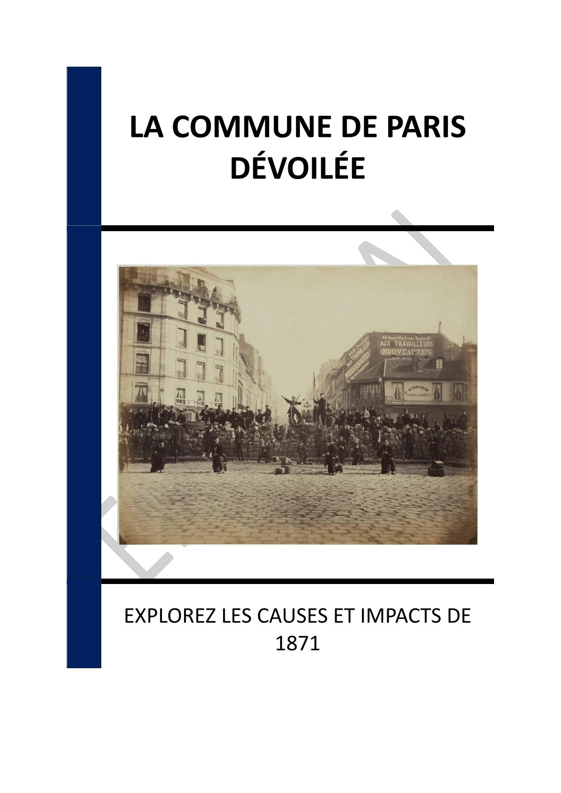

▶
Vitesse
++
+
=
-
--
INTRODUCTION - UN MOMENT DÉCISIF DANS L'HISTOIRE SOCIALE FRANÇAISE
Chapitre 1 - CONTEXTE HISTORIQUE DE LA COMMUNE DE PARIS
1.1 - La France face à la défaite prussienne
1.2 - Les tensions sociales et économiques à Paris
1.3 - Les prémices de l'insurrection
Chapitre 2 - L'ORGANISATION POLITIQUE ET SOCIALE DE LA COMMUNE
2.1 - Les principes de la démocratie directe
2.2 - Les réformes sociales et économiques
2.3 - La séparation de l'Église et de l'État
Chapitre 3 - LES ACTEURS CLÉS DE LA COMMUNE
3.1 - Les leaders politiques et militaires
3.2 - La Garde nationale et les citoyens
3.3 - Les opposants à la Commune
Chapitre 4 - LA RÉPRESSION DE LA COMMUNE
4.1 - La Semaine sanglante
4.2 - Les conséquences immédiates pour les communards
4.3 - L'impact sur la société française
Chapitre 5 - L'HÉRITAGE DE LA COMMUNE DE PARIS
5.1 - Un symbole de lutte pour la justice sociale
5.2 - L'influence sur les mouvements révolutionnaires
5.3 - La mémoire collective et les commémorations
Chapitre 6 - LES DÉBATS HISTORIOGRAPHIQUES SUR LA COMMUNE
6.1 - Les interprétations marxistes
6.2 - Les critiques conservatrices
6.3 - Les perspectives contemporaines
Chapitre 7 - LA COMMUNE DANS LA CULTURE ET L'ART
7.1 - La Commune dans la littérature
7.2 - Les représentations artistiques
7.3 - La musique et les chants révolutionnaires
Chapitre 8 - LEÇONS ET PERSPECTIVES POUR L'AVENIR
8.1 - Les enseignements politiques de la Commune
8.2 - Les défis actuels de la justice sociale
8.3 - L'actualité de la Commune dans le monde moderne
CONCLUSION - UN HÉRITAGE DE LUTTE ET D'ESPOIR
📄 Consulter les annexes du livre
Mentions légales